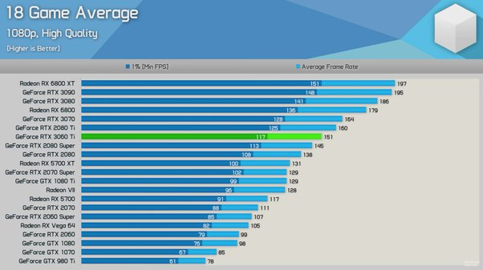

Quando se trata de escolher uma placa de vídeo para o seu sistema, é importante entender as diferenças entre os modelos disponíveis. Nesta postagem, vamos comparar duas placas de vídeo populares da Nvidia: a GeForce GTX 1080 e a GeForce RTX 3060.
Comparação: Nvidia GeForce GTX 1080 vs Nvidia GeForce RTX 3060

Nvidia GeForce GTX 1080
A GeForce GTX 1080 foi uma das principais placas de vídeo da série 10 da Nvidia e foi amplamente elogiada por seu desempenho sólido. Com 8 GB de memória GDDR5X e 2.560 núcleos CUDA, ela era capaz de rodar a maioria dos jogos em 1080p e 1440p com facilidade. No entanto, ela não possui os recursos de traçado de raios (Ray Tracing) encontrados nas placas RTX mais recentes.
Nvidia GeForce RTX 3060
A GeForce RTX 3060 faz parte da série 30 da Nvidia e introduz a tecnologia de Ray Tracing em uma faixa de preço mais acessível. Com 12 GB de memória GDDR6 e 3.584 núcleos CUDA, ela oferece um desempenho sólido em jogos em 1080p e 1440p, além de ser capaz de lidar com traçado de raios em jogos compatíveis.
Comparação de Desempenho
Em termos de desempenho bruto, a GeForce RTX 3060 tende a superar a GTX 1080 na maioria dos cenários de jogos modernos, graças à sua arquitetura mais recente e maior quantidade de memória. Além disso, a capacidade de traçado de raios da RTX 3060 proporciona gráficos mais realistas em jogos compatíveis.

Preço e Disponibilidade
O preço e a disponibilidade podem variar, mas é importante observar que a GTX 1080 é uma placa mais antiga e pode ser encontrada no mercado de segunda mão, muitas vezes a preços mais acessíveis. A RTX 3060, por outro lado, é uma placa mais recente e pode ser encontrada a preços competitivos no mercado atual.
Em resumo, a escolha entre a Nvidia GeForce GTX 1080 e a Nvidia GeForce RTX 3060 depende de suas necessidades e orçamento. A RTX 3060 oferece um desempenho superior e recursos de Ray Tracing, tornando-a uma escolha atraente para jogadores que desejam uma experiência mais avançada. No entanto, a GTX 1080 ainda é uma placa de vídeo sólida para aqueles que buscam desempenho com um orçamento mais limitado.